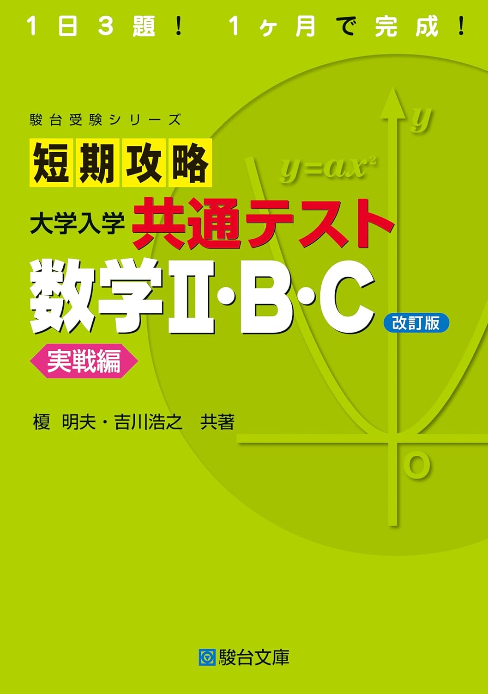

← ポータルに戻る
短期攻略 共通テスト 数学II・B・C
全232ページ

目次 / 解答上の注意
p.1–2
§1 いろいろな式
p.3–10
▶
1
問題 1 ～ 6
p.3
§2 図形と方程式
p.11–22
▶
2
問題 7 ～ 14
p.11
§3 三角関数
p.23–32
▶
3
問題 15 ～ 22
p.23
§4 指数関数・対数関数
p.33–42
▶
4
問題 23 ～ 30
p.33
§5 微分・積分の考え
p.43–54
▶
5
問題 31 ～ 38
p.43
§6 数列
p.55–66
▶
6
問題 39 ～ 47
p.55
§7 統計的な推測
p.67–78
▶
7
問題 48 ～ 53
p.67
§8 ベクトル
p.79–90
▶
8
問題 54 ～ 61
p.79
§9 平面上の曲線と複素数平面
p.91–106
▶
9
問題 62 ～ 69
p.91
付録（常用対数表・正規分布表）
p.107–109
解答・解説
p.110–232
▶
一覧
解答一覧
p.110
§1
§1 解答解説
p.139
§2
§2 解答解説
p.144
§3
§3 解答解説
p.154
§4
§4 解答解説
p.161
§5
§5 解答解説
p.170
§6
§6 解答解説
p.179
§7
§7 解答解説
p.191
§8
§8 解答解説
p.202
§9
§9 解答解説
p.215